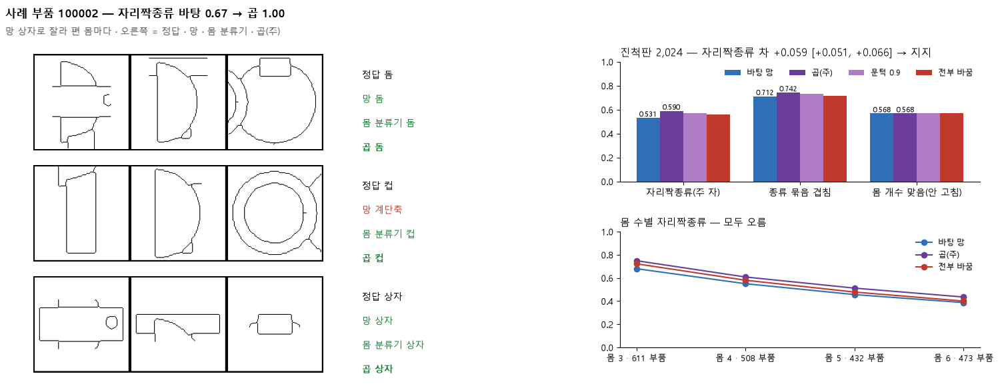

실험 m2_tr0284_h035_바꿔
목표 G1.2 view 모음 → 파츠별 CAD code(CadQuery · 그 전 「3 면도 → 파츠별 CAD」 · 지금 M2 는 위 · 앞 · 옆 고정 세 장만 받음 → 아무 각도 N 장으로 바꿀 것 · 11-20) · G1 첫 제품 — 피규어 · 메카 사진 여러 장 + 치수 → 숨은선 3 면도 + 파츠별 CAD · G0 임의의 이미지 → CAD 코드 · 빌린 가정 3: 생성기기하 · 정답3D · 정사영 · 갚는 계획: 탐색 · 생성기 부품 · 고정 시험지 2,024 · 상자는 tr277 실루엣 맞춤(600 = 모델277 · 1,424 = 모델279 같은 함수) — 오르면 상자 오차 줄이기(dd 선 주인 가리기 tr0283)와 붙임 → 흐린 view · m1 view 로 버팀(Sc) · 목표 시험지 값: 안 잼 (!)
망이 낸 몸마다 그 상자로 잘라 몸 분류기 확률과 망 종류 확률을 곱해 종류를 고르면, 진척판(처음 보는 몸 3 개 이상 2,024) 자리짝종류가 바탕보다 오르나?
판정 · H35 지지(+0.059 [0.052, 0.066]) — 망 상자로 잘라 몸 분류기(온도 2.5)와 망 확률을 곱해 고르면 진척판 자리짝종류 0.531 → 0.590 · 묶음겹침 0.712 → 0.742 · 몸 3 ~ 6 개 모두 오름 · 전부 바꿈 0.559 · 문턱 0.569 보다 곱이 높음 · 다음: 상자 오차 줄이기(dd 선 주인 가리기) · 분류기를 망 상자 자른 그림으로도 배우기 · 개수 고치기(상한 0.05)
| 가설 | 주장 | 결과 | 근거 |
|---|---|---|---|
| H35 | 망 상자로 잘라 몸 분류기 확률과 망 확률을 곱해 고른 종류는 바탕 망 종류보다 짝지은 몸을 더 맞힌다 | 지지 | 바탕 0.531 → 곱 0.590 · 묶음겹침 0.712 → 0.742 · 개수맞음 0.568 그대로(안 고침) · 같이: 전부 바꿈 0.559(+0.028 [0.018, 0.038]) · 문턱 0.9 0.569(+0.038 [0.033, 0.044]) · tr279 통째 망 잘린 그림 0.294(-0.238) · 몸 수별 바탕 → 곱: 3 개 611 0.680 → 0.749 · 4 개 508 0.550 → 0.608 · 5 개 432 0.456 → 0.512 · 6 개 473 0.387 → 0.435 · 앞 600 전부 0.5656 = tr282 미리 보기 0.566(같은 길 확인) · 앞 600 곱 0.599 · 몸 상자 2,024 못 지음 0 |
분석
한 줄로
물음: 망이 낸 몸마다 그 상자로 잘라 몸 분류기 확률과 망 확률을 곱해 종류를 고르면, 진척판 자리짝종류가 바탕보다 오르나?
답: 오른다 — 지지. 진척판 2,024 부품에서 0.531 → 0.590(+0.059 [0.052, 0.066])이다. 「나누기」 쪽 시도가 진척판 바탕을 넘은 건 처음이다.
왜 이 실험을 했나
tr282 에서 잘린 몸 그림으로 배운 분류기가 정답 상자로 자른 몸을 0.89 로 맞혔다. 망 상자로 잘라 전부 바꾸면 600 부품에서 0.53 → 0.57 이었지만, 상자가 10 화소 넘게 어긋난 몸(32 %)은 오히려 나빠졌다. 그래서 두 확률을 곱해, 분류기가 확신할 때만 바뀌고 흐릴 때는 망이 남게 했다. 우리 목표는 도면 → CAD 코드이고, 이 자는 「몸마다 종류를 맞혔나」 를 본다.
바꾼 것 하나
망 몸마다 tr277 이 실루엣에 맞춘 상자로 잘라 tr282 몸 분류기(다시 안 배움)에 넣고, 망 종류 확률 × 분류기 확률이 가장 큰 종류로 바꿨다. 자리 · 개수는 그대로다. 흐름 그림을 그려 보니 분류기 확률이 거의 1 이라 곱이 「전부 바꿈」 과 같아졌다. 그래서 돌리기 전에 분류기 확률을 온도 2.5 로 무디게 했다(검증 몸 3,354 에서 고름 · 시험과 안 겹침). 카드는 그 뒤 돌리기 전에 커밋했다(3fd8e3e8).
결과

| 진척판 2,024 | 곱(주) | 바탕 망 | 판정선 | 넘었나 |
|---|---|---|---|---|
| 자리짝종류 | 0.590 | 0.531 | 차 ≥ +0.05 · 아래 > 0 | 예(+0.059 [0.052, 0.066] · 지지) |
| 종류 묶음 겹침 | 0.742 | 0.712 | — | — |
| 몸 개수 맞음 | 0.568 | 0.568 | 안 고침 | — |
자리짝종류 = 망이 낸 몸을 정답 몸과 자리로 짝지어 종류가 같은 비율(진척판 자). 같이 잰 팔: 전부 바꿈 0.559 · 분류기 확률 0.9 넘을 때만 바꿈 0.569 · 통째 망에 잘린 그림(tr279) 0.294.
왜 이렇게 나왔나
확인한 것
- 몸 3 · 4 · 5 · 6 개 부품 모두 올랐다(0.68 → 0.75 · 0.55 → 0.61 · 0.46 → 0.51 · 0.39 → 0.44).
- 곱이 전부 바꿈보다 0.03 높다. 분류기 혼자 바꾸면 상자가 어긋난 몸에서 잃는다.
- 앞 600 의 전부 바꿈 0.5656 은 tr282 미리 보기 0.566 과 같다. 같은 길로 잰 것이 맞다.
짐작 (아직 확인 안 함)
- 곱이 나은 까닭은 상자가 어긋난 몸에서 망이 남기 때문일 것이다. 이번엔 상자 오차별로 가르지 않았다.
한계
- 상자는 tr277 실루엣 맞춤이다. 32 % 가 10 화소 넘게 어긋난다(dd tr281).
- 분류기는 정답 상자로 자른 그림으로만 배웠다. 온도는 검증 몸 하나로 골랐다.
- 개수는 고치지 않았다. 진척판 자는 넘친 몸을 깎지 않는다.
배운 것과 다음
잘라 낸 몸을 따로 배운 분류기와 망을 곱하면 진척판이 처음 오른다(0.53 → 0.59) — 천장 0.88 까지 0.29 남았다.
- 상자 오차 줄이기: dd 의 선 주인 가리기(tr0283)와 붙인다. 상자가 맞는 몸은 0.94 까지 간다(tr282).
- 분류기를 망 상자로 자른 그림으로도 배운다 — 어긋난 상자 그림을 본 적이 없다.
- 개수 고치기는 상한 0.05 라 그다음.
실험 기록
- 카드(돌리기 전 커밋 3fd8e3e8 · H35_A_Fi · 식 · 판정식 · 진척 칸) · 바꿔284.py(상자 · 온도 · 시험 · 흐름 · 재기 · 그림) · 잼.json · 흐름.png · 결과.png · 원본 out/설명/캐드부품/모델284(온도.json · 셈.npz · 칸기록.json) · 모델279(상자_2024.npy · 맞춤 600 ~ 2,024)
- 고르기 시험 통과(분류기 확신 → 분류기 · 흐림 → 망 · 문턱 경계). 몸 상자 2,024 부품 못 지음 0.
- tr279 진척 2,024 칸도 이 실험 같이 팔로 채움(0.294).